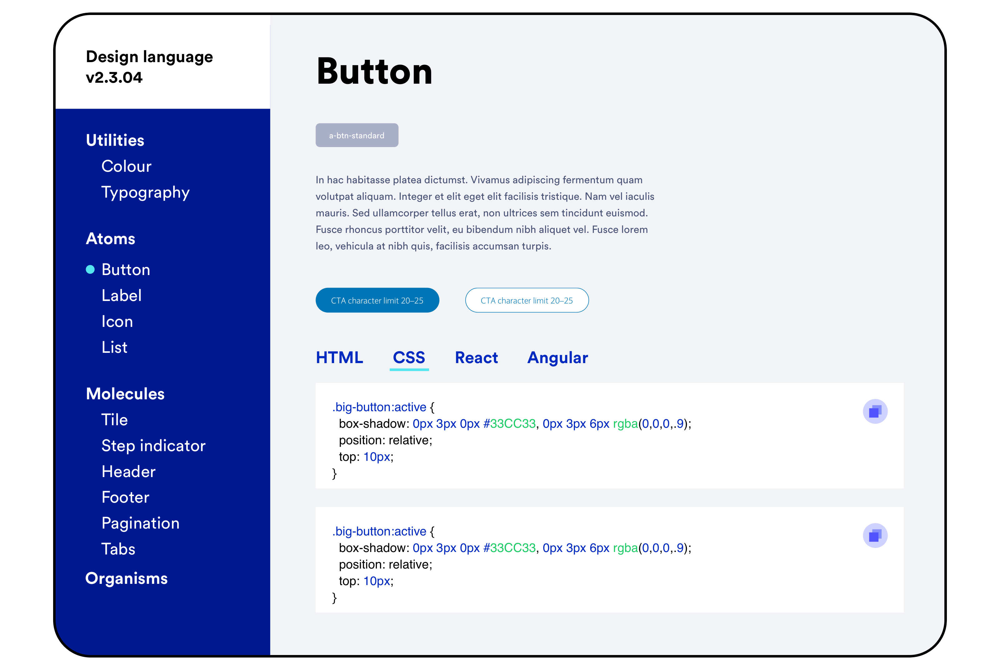

A multi-themed design system for Barclays
I was the design lead for Barclays’ design system. Working very closely with all of the design and engineering teams within the Barclays Group to create a beautiful design system for native apps and web.
There are 3 major brands within the Barclays Group, the overarching principle was keep the UX consistant, but the UI flexible. Because of these, we took inspiration from Brad Frosts Atomic Design methodology to create a system that could flex for the needs of our colleagues.
Toolkit for designers
To ensure designers and developers had everything they needed I created a sketch library, containing components, layer styles and text styles to ensure consitency. This is now used and contributed to by the entire design team for it to be an ever evolving system, meaning the UI stays fresh and we can constantly improve the UX.


Code for developers
It’s important as a designer to face the fact that no customer or user will ever see our design files in real life.
So it was crucial that we created a a pixel perfect replica of the Sketch library in code format. I was asked to lead a team of front-end developers to create a HTML, CSS, Angular and React framework.
Testing for success
When making any design decisions, testing and data was at the forefront. I setup regular A/B tests to ensure that the smallest of changes were making a positive impact.
For larger and more complex patterns and components I opted for lab testing with customers. For this we coded up prototypes for the customers to play with, facilitated by a researcher we quickly gained insights on best approaches.
Guidance and documentation
I wanted to ensure that knowledge and thinking of the team was centrally stored and accessible to both internal employees and external agencies. We created a website to showcase the design system, but also provide our design thinking, research, testing and in-depth developer documentation. It also helps raise awareness to product owners and anyone new to the company.
